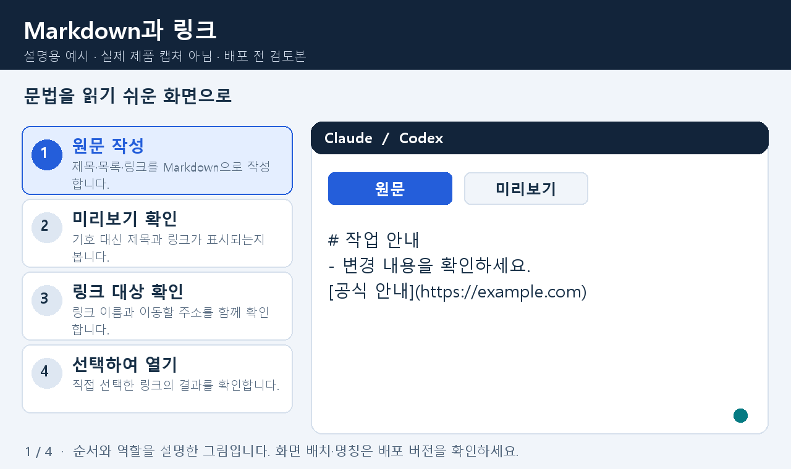
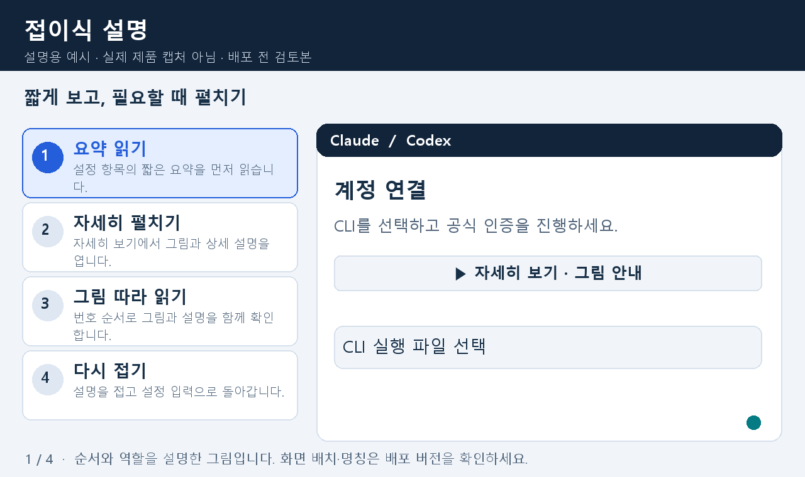
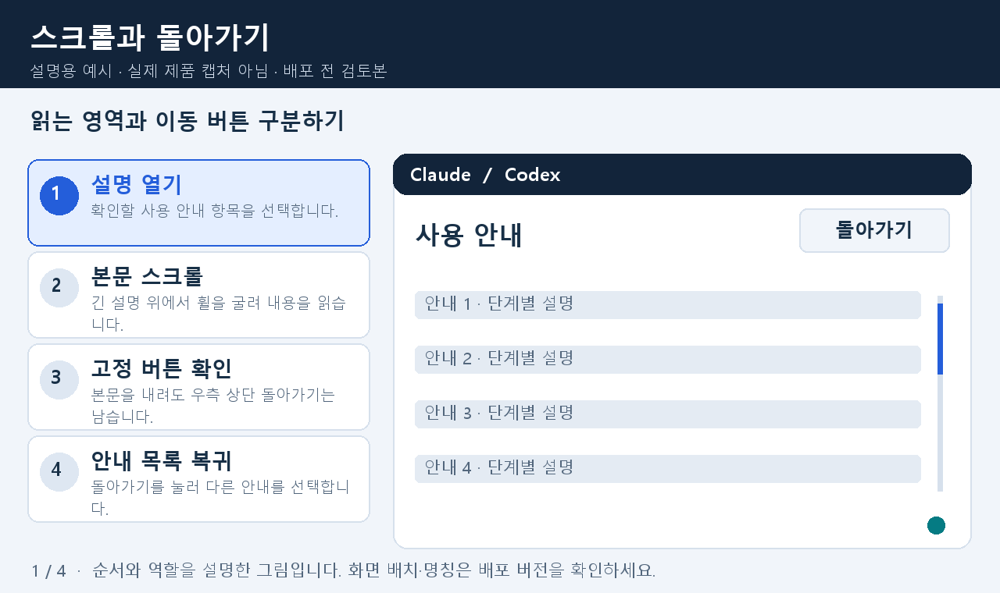
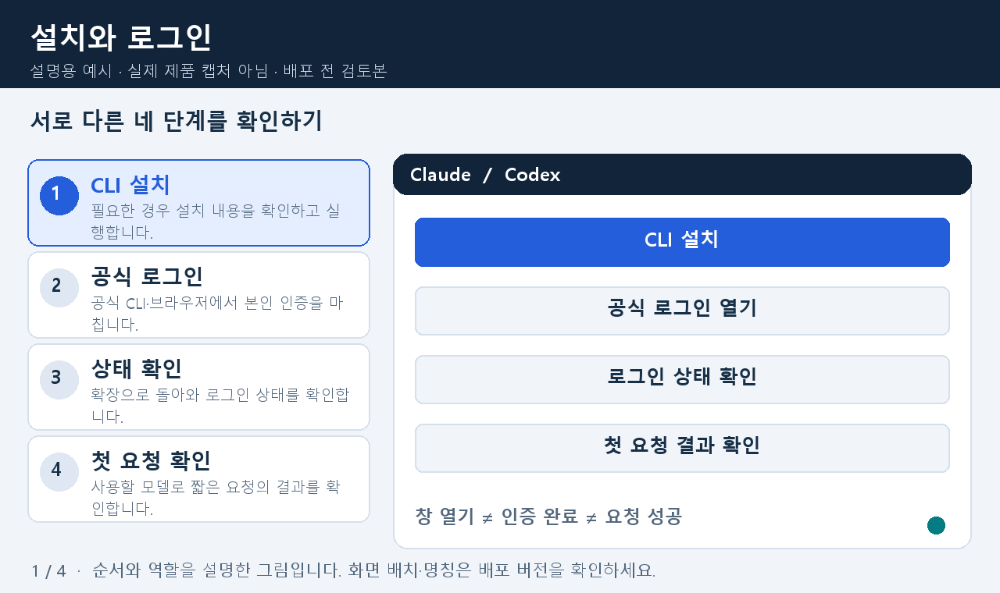
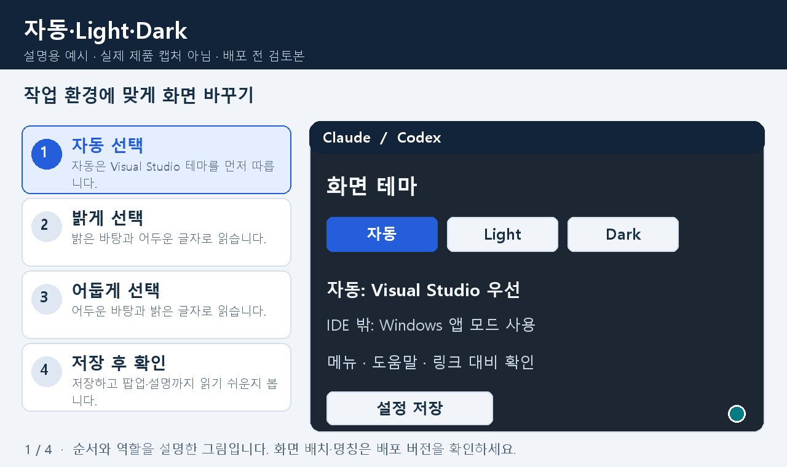
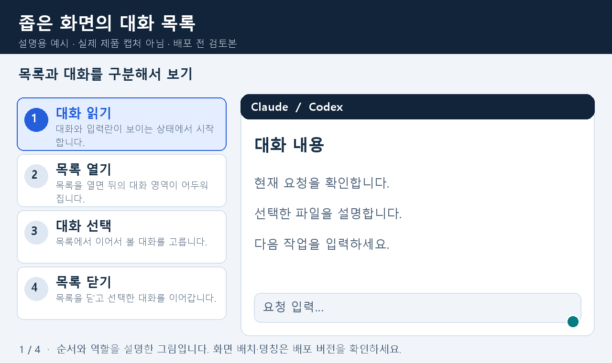

화면 이해 가이드
배포 전 검토본 · 설명용 예시 · 실제 제품 캡처가 아닙니다.
그림 아래 재생 버튼으로 GIF를 켜고 끄세요. 애니메이션 없이도 같은 절차를 읽을 수 있습니다. PDF와 Markdown은 같은 안내 원문을 사용합니다.
Markdown 원문
Markdown과 링크
문법을 읽기 쉬운 화면으로

4단계 정지 그림
- 원문 작성 - 제목·목록·링크를 Markdown으로 작성합니다.
- 미리보기 확인 - 기호 대신 제목과 링크가 표시되는지 봅니다.
- 링크 대상 확인 - 링크 이름과 이동할 주소를 함께 확인합니다.
- 선택하여 열기 - 직접 선택한 링크의 결과를 확인합니다.
접이식 설명
짧게 보고, 필요할 때 펼치기

4단계 정지 그림
- 요약 읽기 - 설정 항목의 짧은 요약을 먼저 읽습니다.
- 자세히 펼치기 - 자세히 보기에서 그림과 상세 설명을 엽니다.
- 그림 따라 읽기 - 번호 순서로 그림과 설명을 함께 확인합니다.
- 다시 접기 - 설명을 접고 설정 입력으로 돌아갑니다.
스크롤과 돌아가기
읽는 영역과 이동 버튼 구분하기

4단계 정지 그림
- 설명 열기 - 확인할 사용 안내 항목을 선택합니다.
- 본문 스크롤 - 긴 설명 위에서 휠을 굴려 내용을 읽습니다.
- 고정 버튼 확인 - 본문을 내려도 우측 상단 돌아가기는 남습니다.
- 안내 목록 복귀 - 돌아가기를 눌러 다른 안내를 선택합니다.
설치와 로그인
서로 다른 네 단계를 확인하기

4단계 정지 그림
- CLI 설치 - 필요한 경우 설치 내용을 확인하고 실행합니다.
- 공식 로그인 - 공식 CLI·브라우저에서 본인 인증을 마칩니다.
- 상태 확인 - 확장으로 돌아와 로그인 상태를 확인합니다.
- 첫 요청 확인 - 사용할 모델로 짧은 요청의 결과를 확인합니다.
자동·Light·Dark
작업 환경에 맞게 화면 바꾸기

4단계 정지 그림
- 자동 선택 - 자동은 Visual Studio 테마를 먼저 따릅니다.
- 밝게 선택 - 밝은 바탕과 어두운 글자로 읽습니다.
- 어둡게 선택 - 어두운 바탕과 밝은 글자로 읽습니다.
- 저장 후 확인 - 저장하고 팝업·설명까지 읽기 쉬운지 봅니다.
좁은 화면의 대화 목록
목록과 대화를 구분해서 보기

4단계 정지 그림
- 대화 읽기 - 대화와 입력란이 보이는 상태에서 시작합니다.
- 목록 열기 - 목록을 열면 뒤의 대화 영역이 어두워집니다.
- 대화 선택 - 목록에서 이어서 볼 대화를 고릅니다.
- 목록 닫기 - 목록을 닫고 선택한 대화를 이어갑니다.